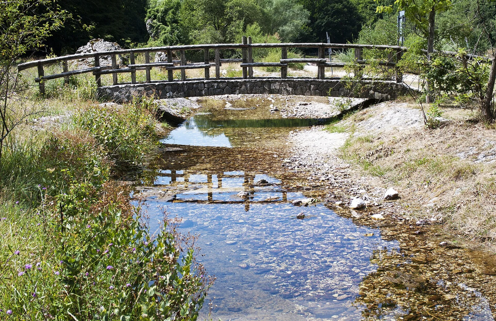
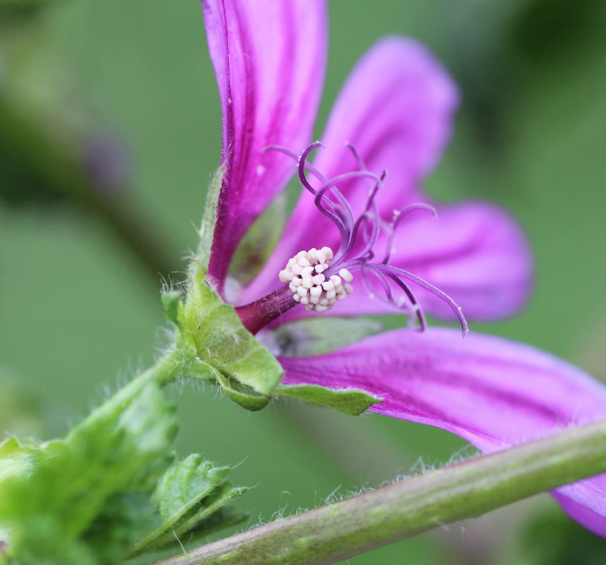

Luoghi del Lazio
La valle di Canneto
Conosci il luogo, guarda i sentieri e leggi le informazioni prima di organizzare il giro.
Conosci la zona Da esplorare · senza valutazione per oggi
Chi cerca, si ritrova.
Senza fretta
Conosci il luogo, guarda i sentieri e leggi le informazioni prima di organizzare il giro.
Conosci la zona Da esplorare · senza valutazione per oggi
Da guardare più vicino

Fiori, foglie e caratteri della malva, nella sua scheda.
Guarda la malvaUna foto, un dettaglio, le parole di un’uscita.
Le sezioni editoriali qui sotto restano accessibili in tutti gli scenari. Non dichiarano presenza di specie, condizioni favorevoli o uscite effettuate.
Leggi le regole dello studio